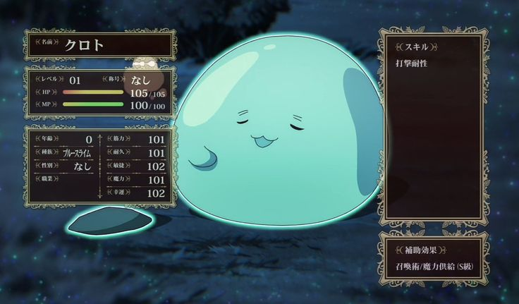
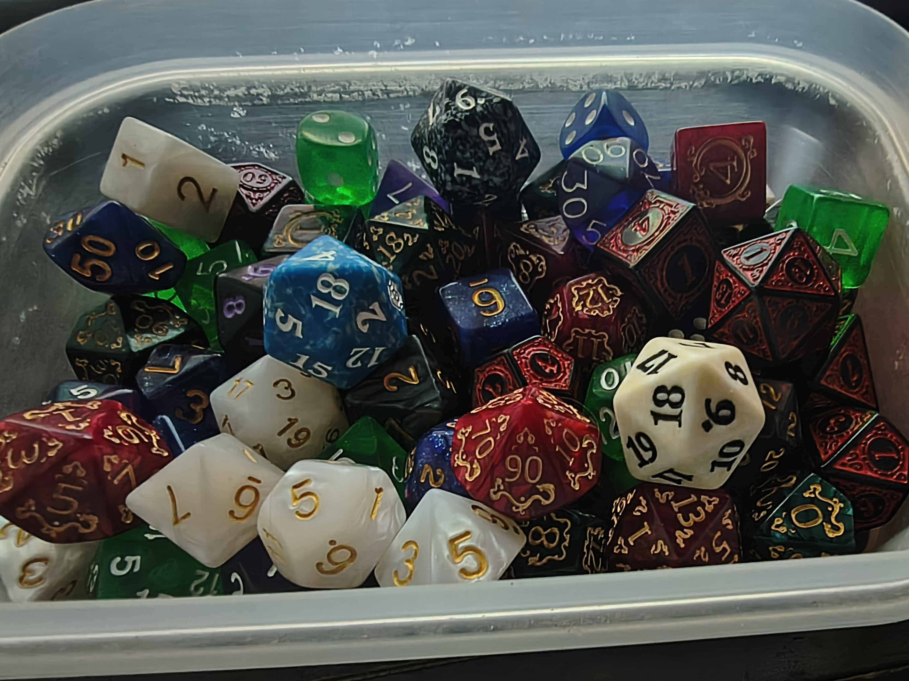
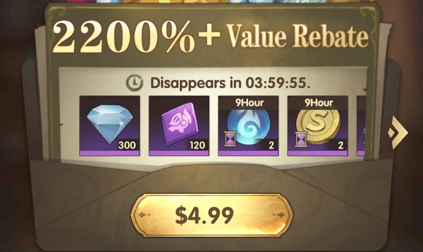
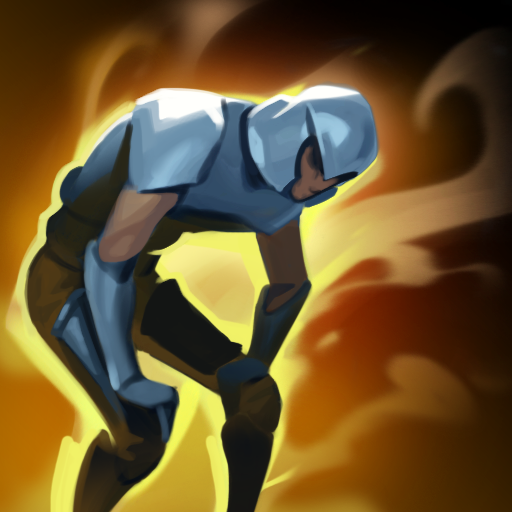
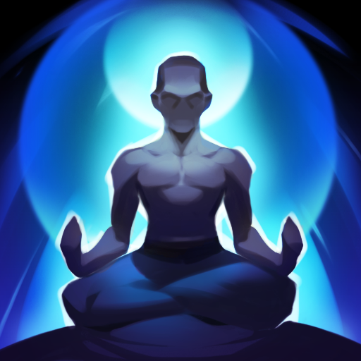
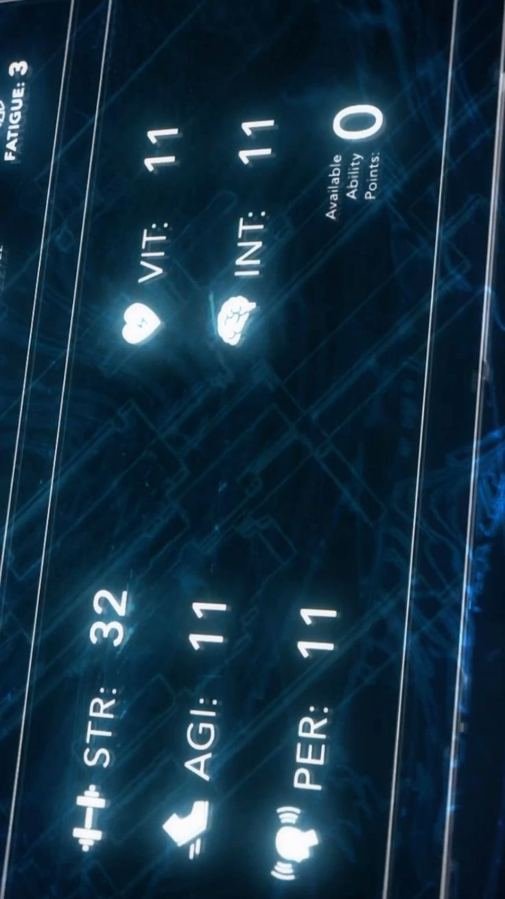
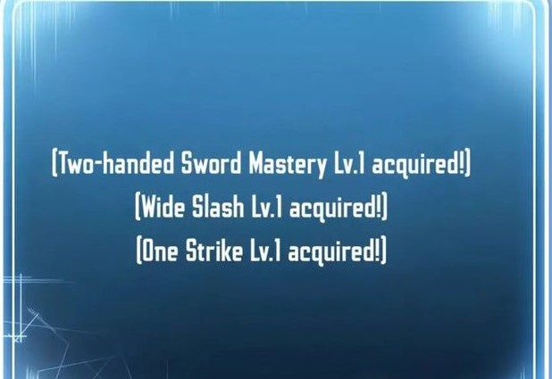

Ficha de Personagem
A ficha de todos os jogadores tem o seguinte:
Nome, espécie, função, título e seis atributos principais
Força, Vigor, Agilidade, Destreza, Inteligência e Carisma
Que influenciam atributos especiais como pontos de existência, magículas, aura, vida, mana, estamina, bloqueio e esquiva
além de determinar sua eficiência em diversas perícias físicas, mentais e especiais, cujo nível de domínio varia de aluno até mestre.
Já que as perícias da ficha base são mais voltadas a acolherem todos, algumas únicas irão aparecer com o tempo. Esse sistema é explicado na sessão de atributos e perícias.
Ao decorrer da campanha sua ficha será moldada conforme seu desenvolvimento, mostrando sua verdadeira face. Qualquer problema que venha ter, seja ele com alguma númeração errada de atributo, discordância perante uma perícia garantida pela história basta conversar com o mestre, mostrando seus pontos que tudo, no final, será resolvido. O mestre existe para ajudá-los nessa grande aventura em um mundo novo.

Sistema de Dados
O sistema utiliza um dado de vinte lados (para usar o comando do bot do server basta digitar "d20" que funciona, o outro é "/r d20") como base para resolver ações e testes. Sempre que um personagem tenta realizar algo incerto como atacar, esquivar, investigar ou resistir a um efeito o jogador rola Xd20+Y onde X é o atributo relevante para a situação e Y a perícia relevante, comparando o resultado final com uma dificuldade definida ou com o valor de outro personagem. Se o resultado for igual ou superior ao necessário, a ação é bem-sucedida. Há casos onde o valor deverá ser superior e um valor igual ao valor de dificuldade será considerado como falha.
Em algumas situações, alguns fatores, habilidades, itens e etc podem favorecer ou prejudicar o personagem. Quando uma circunstância é favorável, o teste é realizado com vantagem, permitindo que o jogador role com um d20 adicional e utilize o maior resultado entre eles. Quando a situação é desfavorável, o teste ocorre com desvantagem, fazendo com que o jogador role um d20 adicional e utilize o menor resultado.
Como sempre, a situação dita a rolagem de dados. Um exemplo de cena:
Mestre:
Sara, sua personagem está sendo tomada pelo espírito da espada, caso queira resistir rola um dado de Vontade com seu atributo de força ou seu atributo de carisma.
Sara:
Vou rolar com força então vai ser 2 de força, mais 2 já que eu sou treinada em vontade. Mestre eu tenho vantagem já que a minha personagem já teve sua mente controlada no passado e conseguiu sair desse controle?
Mestre:
Bom ponto. Pode ser, você pode rolar com vantagem mas só esse dado.
Sara:
Tá bom eu vou rolar 3d20+2 então... 19 mestre!
Mestre:
Maravilha! Você segura a espada maligna e mesmo escutando seus sussuros lhe contando os vários mals que causarão juntos você fecha os olhos e lembra de quando estava sobre o controle do feiticeiro, usando toda sua força você joga a espada no chão e aquelas vozes se quietam.

*Sim, esses dados são meus*
Custos
Muitas Habilidades exigem um custo para que sejam ativadas. O custo varia de Habilidade para Habilidade, com algumas custando apenas 1 de magícula enquanto outras podem chegar a custar 50 de magículas.
Existem também Magias e Técnicas que custam mana e estamina respectivamente, essas Magias e Técnicas raramente são de graça, sempre trazendo com si um custo alto de energia para que possam ser usadas.
Há um tipo raro de treinamento onde o ser usa também sua Aura, um tipo de energia espiritual que todo ser vivo possui. A Aura serve como um encantamento mas sem utilizar magia, apenas com o esforço físico do usuário. Causando efeitos que podem parecer com magias mas são produtos inteiramente da força espiritual e vital do ser.

Ativações
As habilidades são separadas em cinco tipos de ativações:
Ativa, Passiva, Ativa Variável, Passiva Variável e Passiva Verdadeira.
A diferença entre cada uma é:
Ativa
Como o próprio nome já explica, esse tipo de habilidade necessita que seja ativada conscientemente pelo usuário. Tendo, ou não, um custo para sua ativação. Esse tipo de habilidade tem um efeito imutável.
Passiva
Esse tipo de habilidade está em constante ativação mas pode ser desativada caso necessário, funcionando assim como uma armadura que pode ser retirada a hora que quiser. Assim como o tipo anterior seu efeito é imutável.
Ativa Variável
Diferente de uma Ativa comum, os efeitos dessa Ativa podem ser mudados e configurados de diferentes modos. Habilidades com efeitos simples como 『 Manipulação de Chamas 』são desse tipo devido a sua grande versátilidade.
Passiva Variável
São como a categoria anterior, funcionando com a mesma base. Habilidades como 『 Aceleração de Pensamento 』são passivas variáveis por terem um efeito mutável, podendo trocar a magnitude do efeito ou qualquer outro aspecto.
Passiva Verdadeira
Essas habilidades são ao mesmo tempo imutáveis e impossíveis de serem desligadas. Normalmente representando uma parte essencial do ser da qual sem ela algo de ruim aconteceria.
Condições
Algumas habilidades necessitam que certas condições existam para que possam ser ativadas, ou para que continuem ativas. Exigindo por exemplo que o usuário esteja enfrentando um oponente para que possa ser ativa, ou que ele esteja em um ambiente vulcanico. Essas habilidades costumam ser mais fortes que as outras justamente devido a suas restrições. É possível, em certas situações, criar uma condição para que uma habilidade seja ativa, se auto limitando em troca de reduzir o custo, aumentar a potência, alcance ou algum outro fator da habilidade.

Habilidades
As habilidades representam talentos, técnicas ou capacidades especiais que um personagem possui além de seus atributos básicos e perícias. Elas permitem realizar ações únicas, modificar regras do sistema ou conceder vantagens em determinadas situações, refletindo o estilo de combate, conhecimento ou natureza sobrenatural do personagem.
Elas evoluem com seus mestres e são moldadas pelas escolhas e pela alma. Uma mesma habilidade pode se tornar um desastre natural nas mãos de uma pessoa ou virar uma benção nas mãos de outra. Não existe um único modo de usar uma habilidade, nenhuma habilidade é escrita em pedra.
Com algumas pessoas, fortes o suficiente, um grupo de habilidades pode evoluir para uma única habilidade que eleva o que elas eram e transforma em algo muito superior, assim como podem ser usadas como material de consumo para evoluir outra habilidade. Tudo depende de como seu usuário as vê e as entende.
Sistema de Descanso
Dentro do sistema existem dois tipos de descanso: descanso curto e descanso longo.
Descanso Curto
pode durar até 6 horas e representa uma pausa breve, como um cochilo, um momento para recuperar o fôlego ou reorganizar os equipamentos. Durante esse período, o personagem recupera parte de seus recursos, como vida, estamina, mana e outros aspectos essenciais, permitindo que continue suas atividades sem precisar interromper completamente sua jornada.
Descanso Longo
exige no mínimo 8 horas e representa um sono adequado e restaurador. Esse tipo de descanso permite uma recuperação muito maior dos recursos do personagem, restaurando grande parte de sua energia física e mental. No entanto, por demandar mais tempo e segurança para ser realizado, nem sempre é possível utilizá-lo em situações de perigo ou exploração contínua.

Níveis e Evoluções
Diferente de outros RPGs o meu utiliza um mecanismo de níveis invisíveis, cujo valor é conhecido apenas pelo mestre. A evolução acontece de forma narrativa e gradual, refletindo as experiências vividas pelo personagem ao longo da história. Esses níveis aumentam sempre que o personagem participa de eventos significativos, como superar grandes desafios, vencer inimigos importantes, descobrir conhecimentos relevantes ou passar por momentos marcantes de desenvolvimento pessoal.
Dessa forma, o progresso não depende apenas de combate, mas também de exploração, decisões e impacto na narrativa. O jogador seguir com seu personagem também ajuda bastante nessa progressão, quanto mais imersivo for o papel maior será o aumento.
Conforme esse nível oculto avança, o jogador ganha aumento de atributos, avanço em perícias, obtenção de novas habilidades ou aprimoramento das que já possui. Em alguns casos a evolução pode até afetar a própria natureza do personagem, permitindo uma evolução de espécie, como a transformação de um humano comum em um humano iluminado. Essa evolução é ditada especialmente pelo modo de agir e as habilidades do personagem, nem todo humano vira um iluminado e nem todo goblin vira um hobgoblin.
Atributos
Os atributos representam as capacidades fundamentais de um personagem, descrevendo o estado íntegro de seu corpo, mente e presença. Eles definem o potencial natural do personagem em diferentes aspectos, como força física, resistência, velocidade, raciocínio ou influência social. Em termos narrativos, os atributos representam o quão desenvolvido aquele personagem é em determinado campo, servindo como a base sobre a qual suas ações e especializações são construídas.
No sistema, os atributos também determinam a quantidade de dados que o jogador rola em determinadas ações, assim como explicado na sessão da ficha. Quanto maior o atributo relacionado a uma ação, maior será o número de dados disponíveis para o teste, representando maior domínio ou capacidade naquela área. Assim, um personagem com alto valor em um atributo possui mais chances de obter bons resultados, pois conta com mais oportunidades dentro da rolagem. O máximo natural que um personagem pode ter em um atributo é 10 sendo considerado equivalente a um desastre natural quando envolve aquele atributo, com 5 sendo considerado um ser de extrema elite e 1 sendo uma pessoa normal.
Dessa forma, os atributos funcionam como o núcleo mecânico do personagem, influenciando diretamente suas chances de sucesso e servindo como base para cálculos de outros valores do sistema, como vida, mana, estamina e outros aspectos derivados. Eles representam não apenas números, mas o nível geral de desenvolvimento do personagem em cada aspecto de sua existência.

Perícias
As perícias representam os conhecimentos, treinamentos e especializações práticas de um personagem. Enquanto os atributos definem o potencial natural de alguém, as perícias mostram aquilo que o personagem realmente aprendeu a fazer ao longo de sua vida e de sua jornada.
Cada perícia está ligada a um campo específico de ação, como combate, movimento, análise, interação social ou capacidades espirituais. O nível de domínio em uma perícia determina o grau de eficiência do personagem ao utilizá-la, variando entre estágios como Aluno, Treinado, Prodígio, Experiente e Mestre, refletindo o quanto aquele talento foi desenvolvido.
No início da campanha, é comum que os personagens possuam um conjunto semelhante de perícias básicas, representando habilidades comuns ou conhecimentos gerais. No entanto, conforme a história avança, os personagens passam por experiências diferentes, enfrentam desafios distintos e tomam decisões únicas. Por causa disso, o sistema permite que eles adquiram novas perícias ou desenvolvam perícias únicas, diretamente ligadas aos acontecimentos vividos.
Essas novas perícias podem surgir de treinamento, descobertas, mestres encontrados durante a jornada, eventos marcantes ou até transformações pessoais. Assim, mesmo que dois personagens comecem com capacidades parecidas, com o tempo cada um desenvolve um conjunto próprio de especializações, refletindo sua trajetória individual dentro da narrativa.
